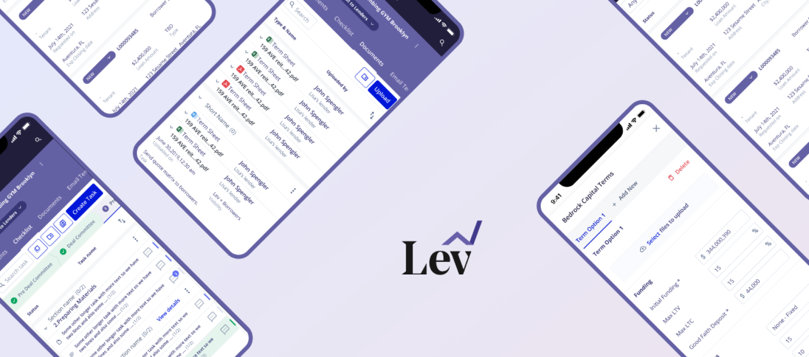
Lev: Commercial real estate transactions, rebuilt.
NYC · 2022 · Lead Product Designer
The Problem
Commercial real estate brokers were managing complex, multi-party deals — coordinating between borrowers, lenders, and internal teams — inside a platform that had no shared visibility, no structured workflow, and no consistent way to track what was happening or why. Deals stalled. Documents got lost. Borrowers had no idea where they stood in the process.
My role was to redesign the core deal management experience: document handling, task coordination, lender analysis, and real-time deal updates — across both desktop and mobile.
Team
- Lead Designer: Stefania
- Manager: Project Manager
- Collaborators: Development team
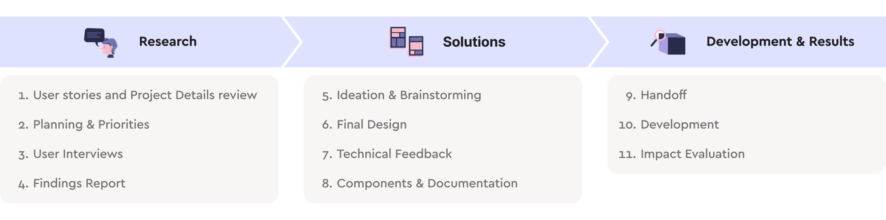
Document Management
Document handling was creating friction at every level. There were no components, no folder structure, and no visibility controls — and in commercial real estate, who can see which document is a compliance and trust issue, not just a UX preference.
I redesigned the document system with role-based visibility so that brokers, borrowers, and lenders each see only what's relevant to them. Beyond access control, the redesign addressed several concrete pain points surfaced through user feedback:
- Traceability: Added document metadata — creation and modification dates, visibility settings, and task associations — so users could understand the context of each file at a glance.
- Organization: Introduced folder structures and bulk editing to handle the volume of documents a typical deal generates.
- Recovery: Implemented a deleted documents section with restore capability, addressing a recurring user concern about accidental deletions.
- Information density: Regrouped related fields (uploader name + role, document name + type) to reduce visual clutter without losing detail.
- Document preview: Built a preview modal from scratch with in-document search — a feature brokers specifically needed to review term sheets quickly without downloading files.
- Mobile support: Designed responsive components to ensure usability on small screens, extending access beyond desktop workflows.
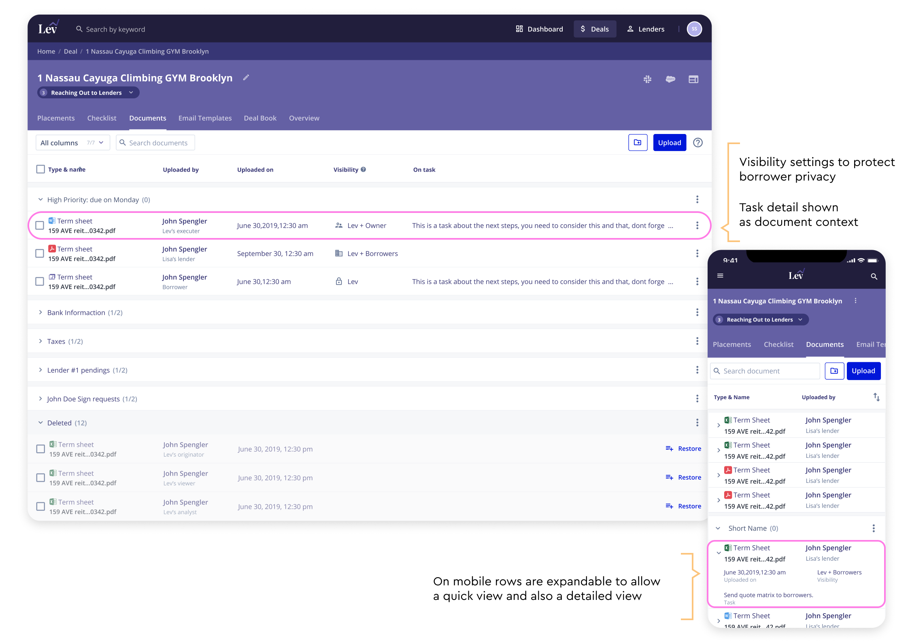
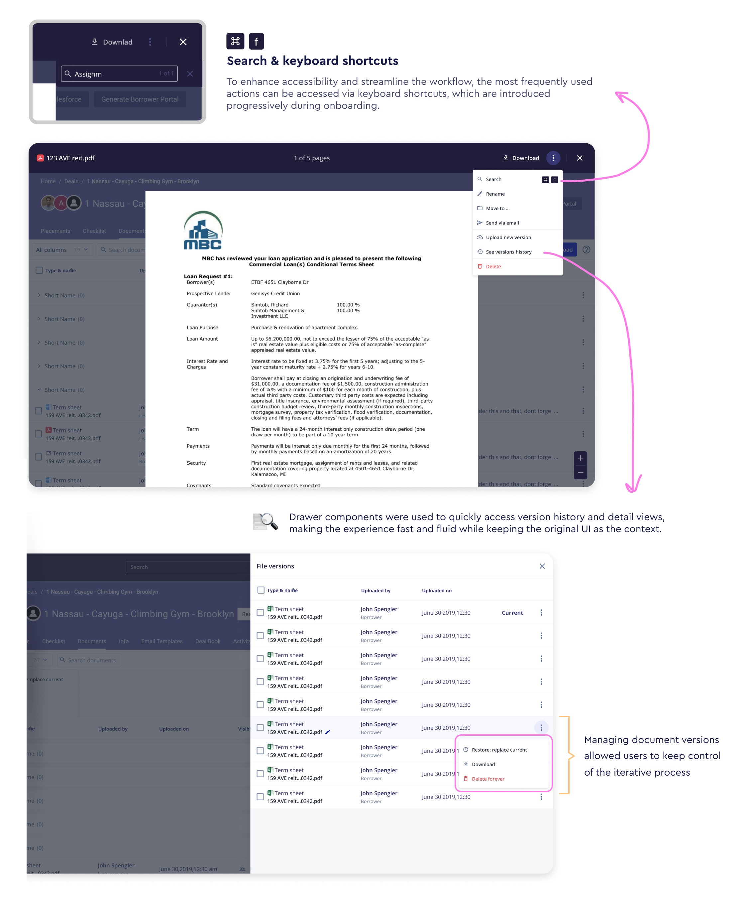
Deal Tasks Dashboard
Brokers and borrowers were operating without a shared map of the process. Borrowers didn't know what stage they were in, what was blocking progress, or what came next. Brokers had no clean way to surface urgent tasks without overwhelming borrowers with future steps that weren't yet relevant.
I reorganized the task dashboard around deal stages, creating a clear separation between what requires action now and what comes later. Key changes driven by this framing:
- Stage-based grouping: Tasks are organized by process step, giving borrowers a clear sense of position and progress — and allowing brokers to plan ahead without creating noise for borrowers.
- Blocking task visibility: Tasks that are blocking deal progress are surfaced prominently, so both parties know where attention is needed.
- Participant clarity: Each task shows who is responsible and whether it involves the borrower, the broker, or both — eliminating ambiguity about who needs to act.
- Optional descriptions: Brokers can add context to tasks when instructions need more detail, without cluttering the default view.
- Mobile version: Rebuilt the dashboard for small screens, carrying all new features into the mobile experience.
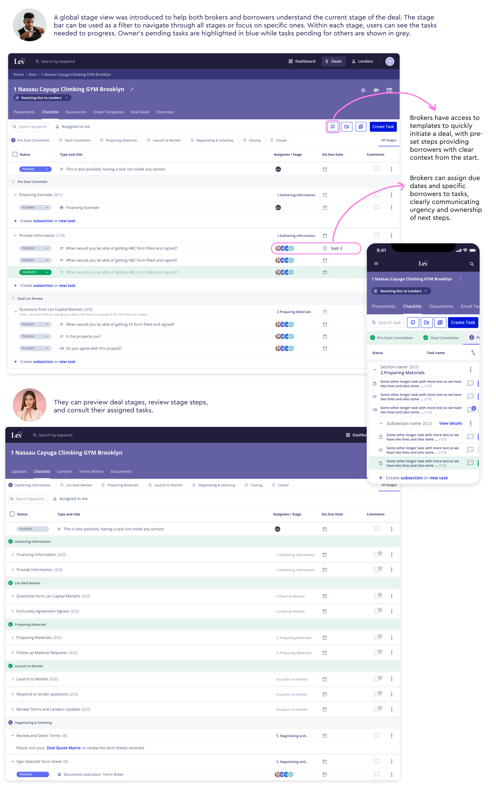
Deal Feed
Borrowers had no real-time visibility into what was happening with their deal between touchpoints with their broker. Lender activity, new terms, and task updates were happening without any notification reaching the borrower.
I designed a deal feed from scratch. Before defining the UI, I mapped every notification type the system could generate:
- Lender activity: when a lender is added, contacted, passes, or reviews a deal.
- Terms updates: new terms received, including cases where a single lender sends multiple rounds of terms.
- Task status changes: new tasks, updates, and assignments.
- Task notes: comments made to unblock tasks — often the most actionable notification type.
Several edge cases shaped the card structure: lenders can send multiple terms per deal; status updates can include an attached note; if a lender passes, a reason is attached; and users managing multiple deals need to track feeds across all of them simultaneously.
The resulting feed card system uses distinct colors and icons per notification type, making it scannable at a glance — users can immediately identify whether they're looking at a new term, a lender update, or a task action, without reading the full card.
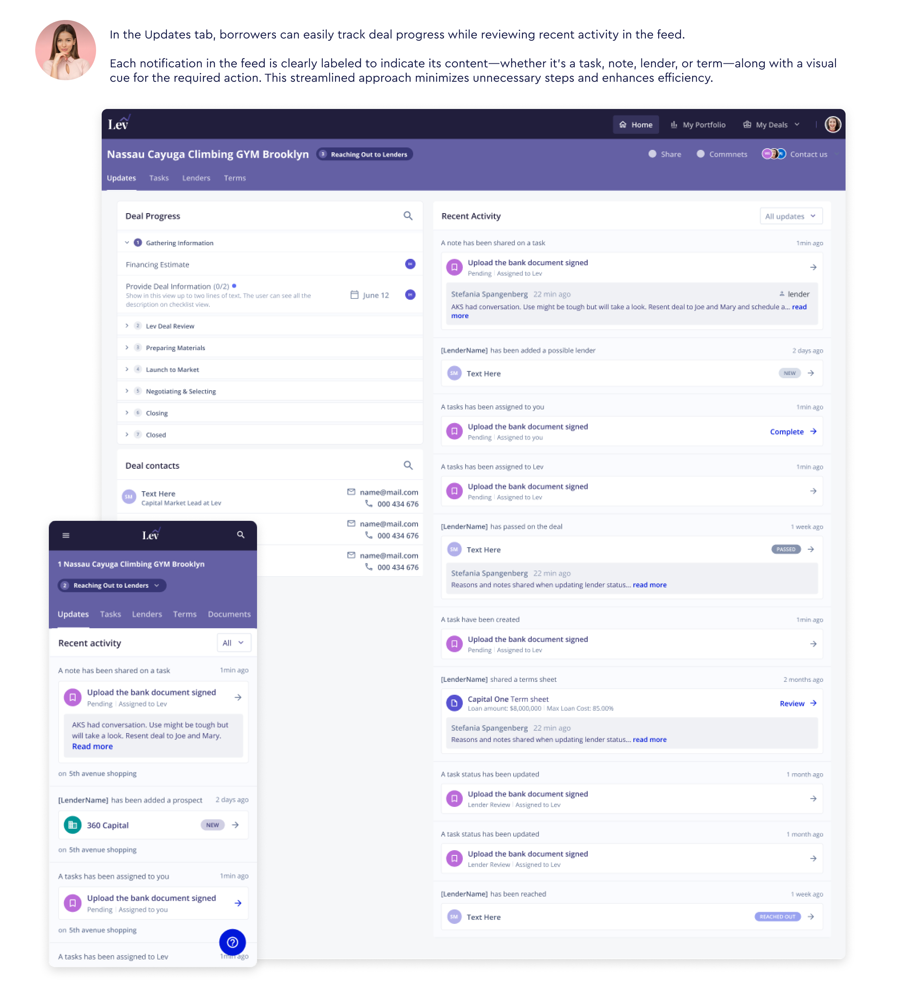
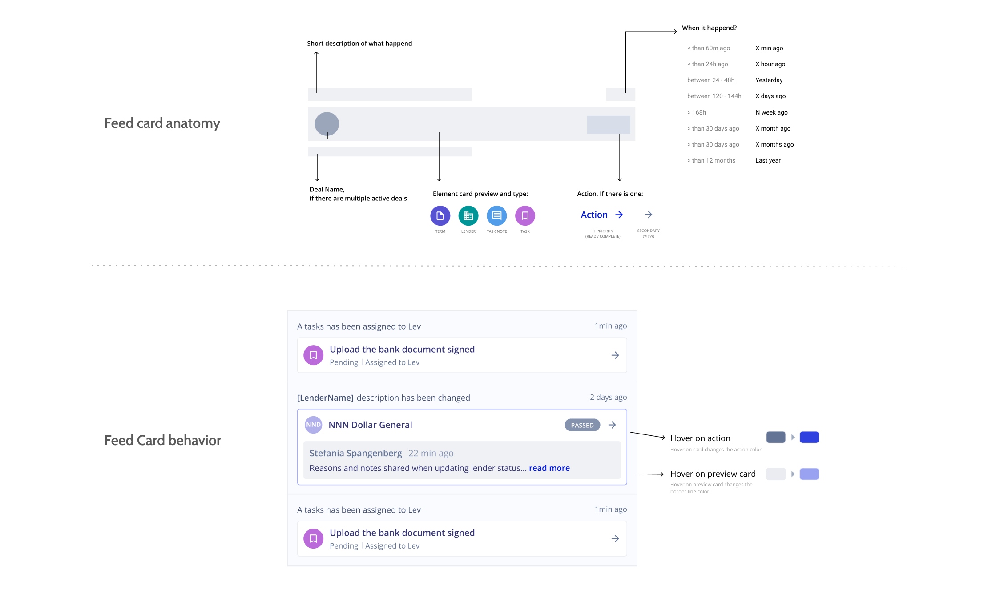
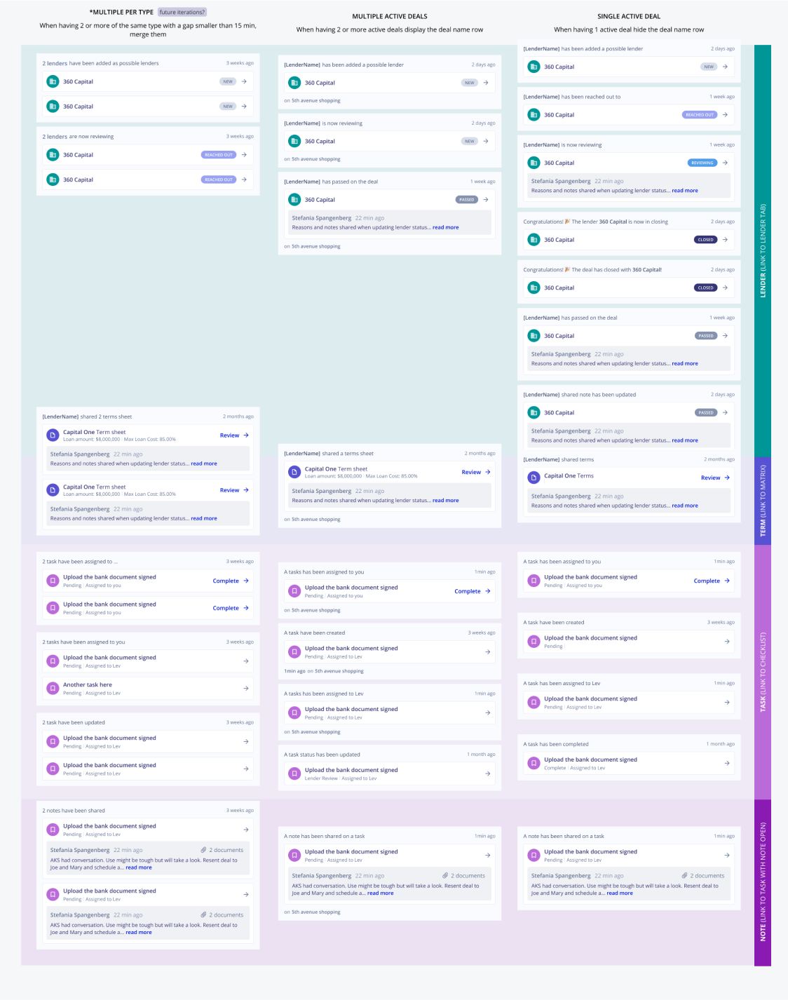
Lender Analysis Tool
Matching the right lender to the right deal was largely guesswork before this tool existed. Brokers needed to understand lender preferences — deal types, size ranges, risk tolerance — to make confident recommendations to borrowers.
I designed an analysis tool that surfaces lender behavior patterns and deal preferences, giving brokers a structured way to compare options and explain their recommendations to clients with confidence.
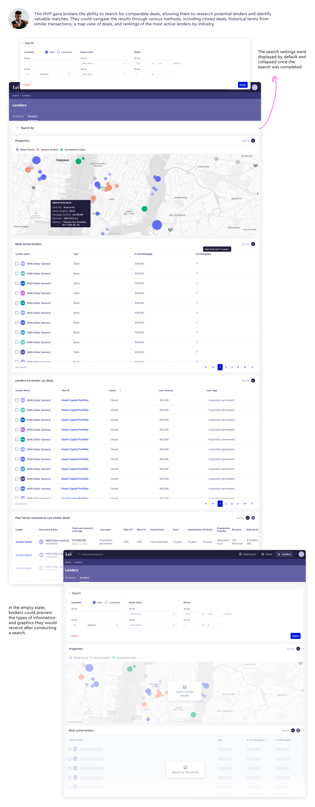
Impact and Learnings
Without instrumented metrics at the time, I tracked which issues users raised most frequently before and after each release. The nature of reported problems shifted — from "I can't find this document" and "I don't know what's happening with my deal" toward more specific edge cases. That shift indicated the core workflow problems were resolved, even without quantitative data to confirm it.
The compliance dimension of document visibility was the most important constraint I hadn't fully anticipated. In financial services, access control isn't a feature — it's a requirement. Getting the visibility rules right meant working closely with the engineering team to understand what was technically enforceable, not just what looked clean in Figma. That collaboration shaped how I approach technical constraints on every project since.
Building the design system in parallel with the product work was the right call. The platform had no component library when I joined, and the inconsistency was creating friction both for users and for the development team. Establishing components early made it possible to move faster on feature work without accumulating design debt — and gave engineers clear behavioral specs for every element.
The absence of tracking early in this project reinforced something I now prioritize from day one: establishing lightweight measurement before launch, so iteration is driven by real usage data rather than inference.
Figma Design System: Component Library
When I joined Lev, the team had no design system — every surface was inconsistent, and there was no shared language between design and engineering. I built the component library from scratch, planning each component for flexibility and adaptability as the product evolved.
Alongside the components, I wrote comprehensive documentation covering each element's states, behaviors, and interaction guidelines. This gave the development team clear specs for implementation and reduced the back-and-forth that typically slows down handoff.
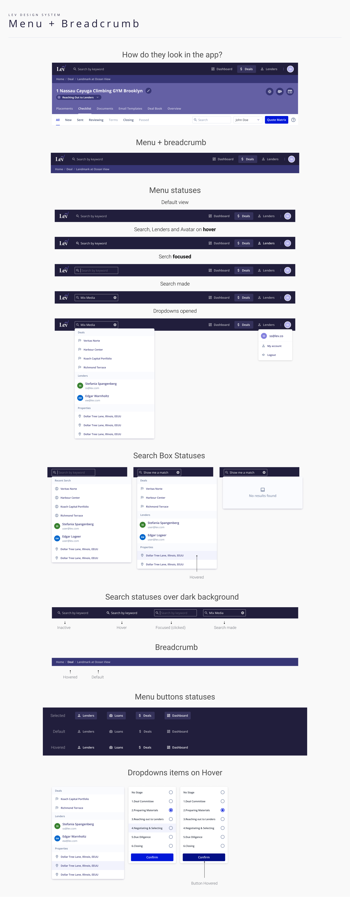
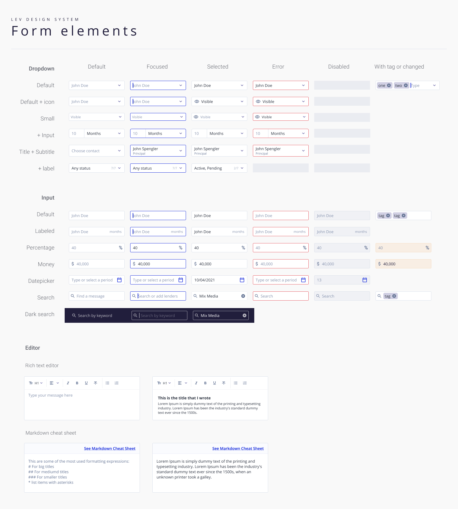
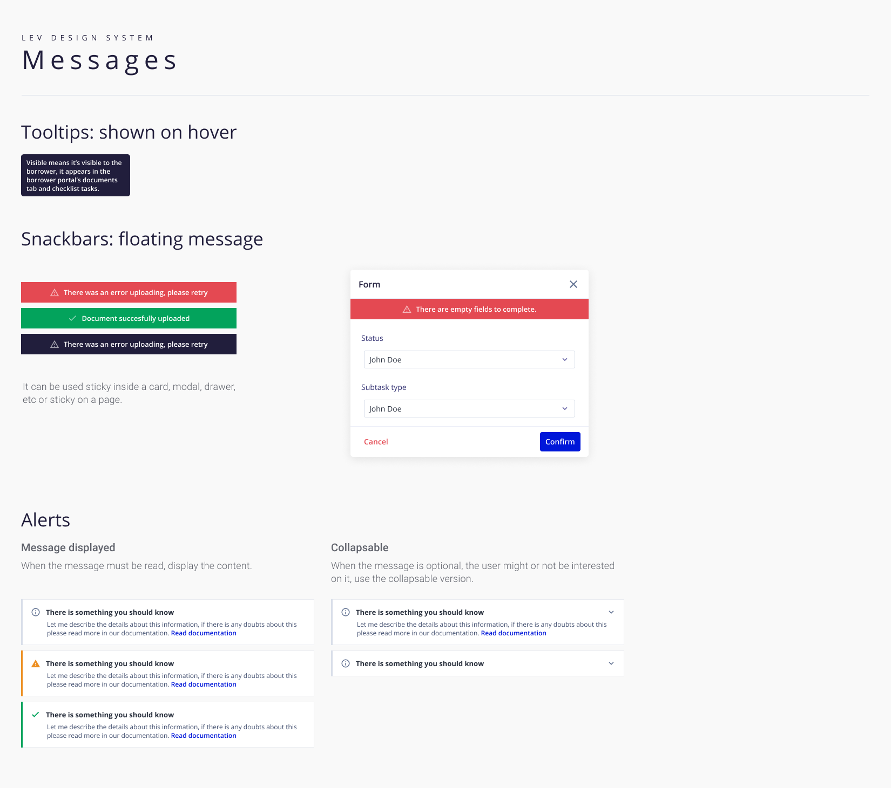
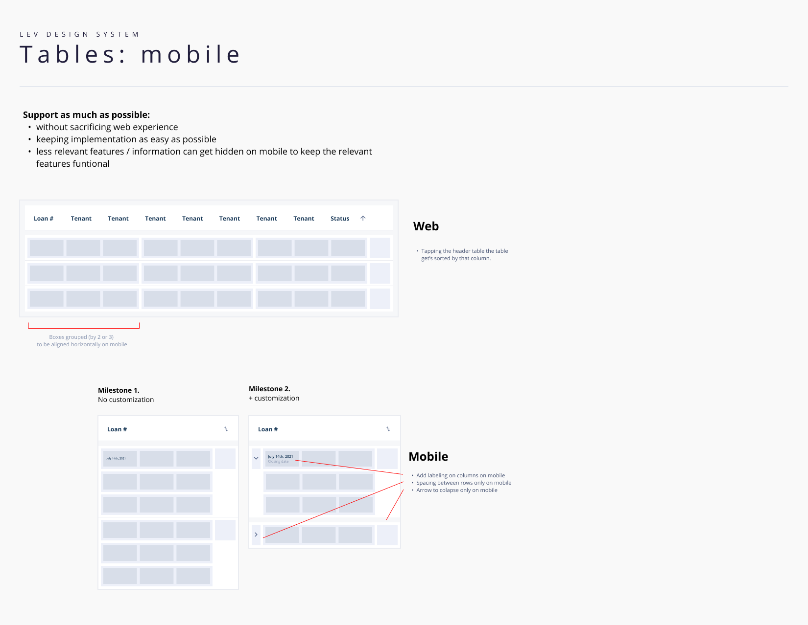